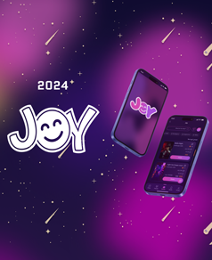

Research
Surveys and interviews to understand users and their social needs.
Making meaningful connections easier, one shared experience at a time.

Joy is a social discovery app designed for people aged 20–35 who want to meet like-minded people and discover activities in their city.
The goal of this project was to learn and apply the end-to-end digital product design process by creating an app that makes finding friends and sharing new experiences easier, safer, and more enjoyable.
Surveys and interviews to understand users and their social needs.
Identifying pain points, motivations, and user personas.
Exploring features and solutions based on user needs.
Creating user flows, wireframes, and interactive prototypes.
Testing the experience and refining the design.
Explore selected screens and design explorations from the Joy project.
WANT TO SEE THE FULL STORY?